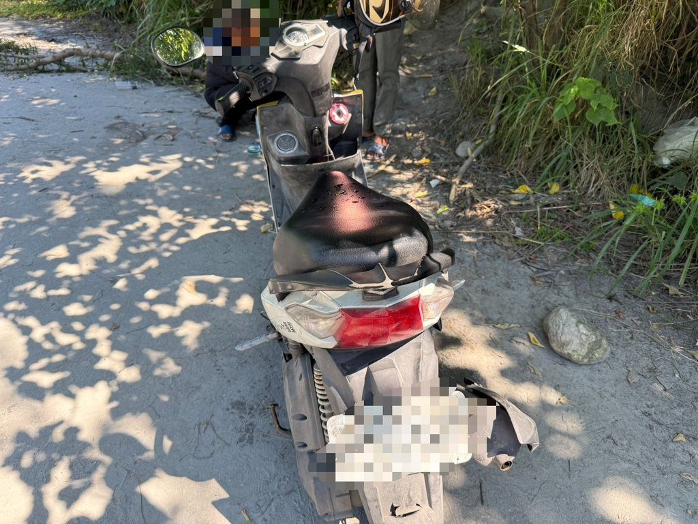
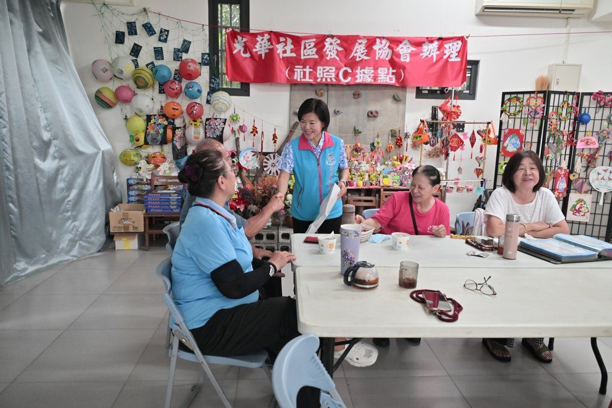
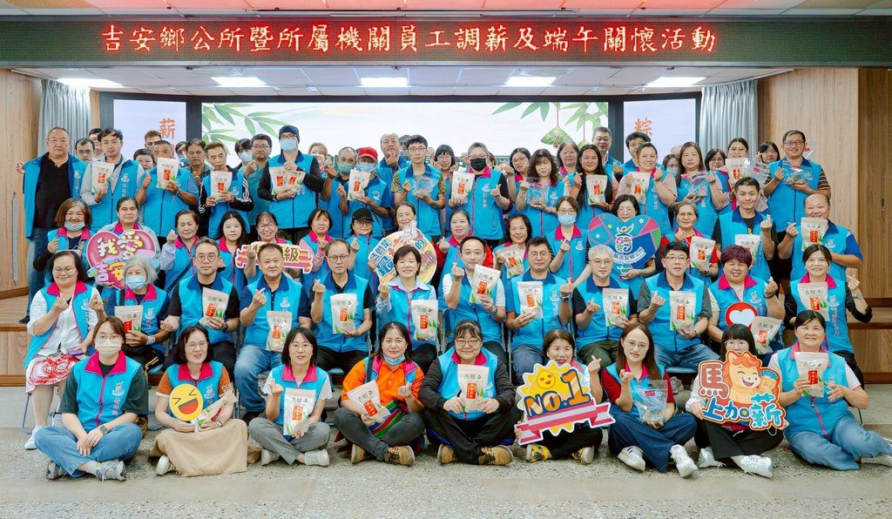
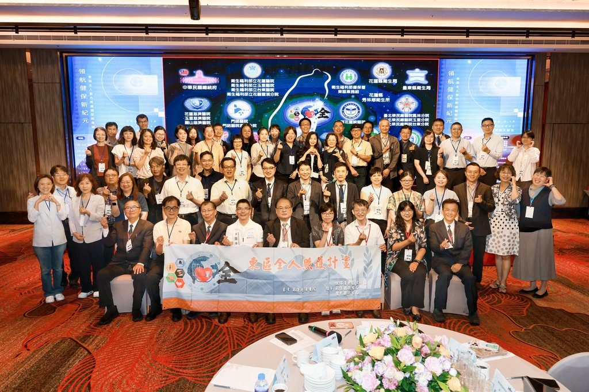
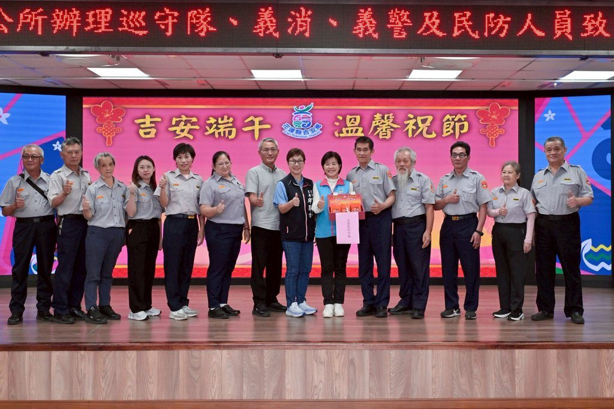
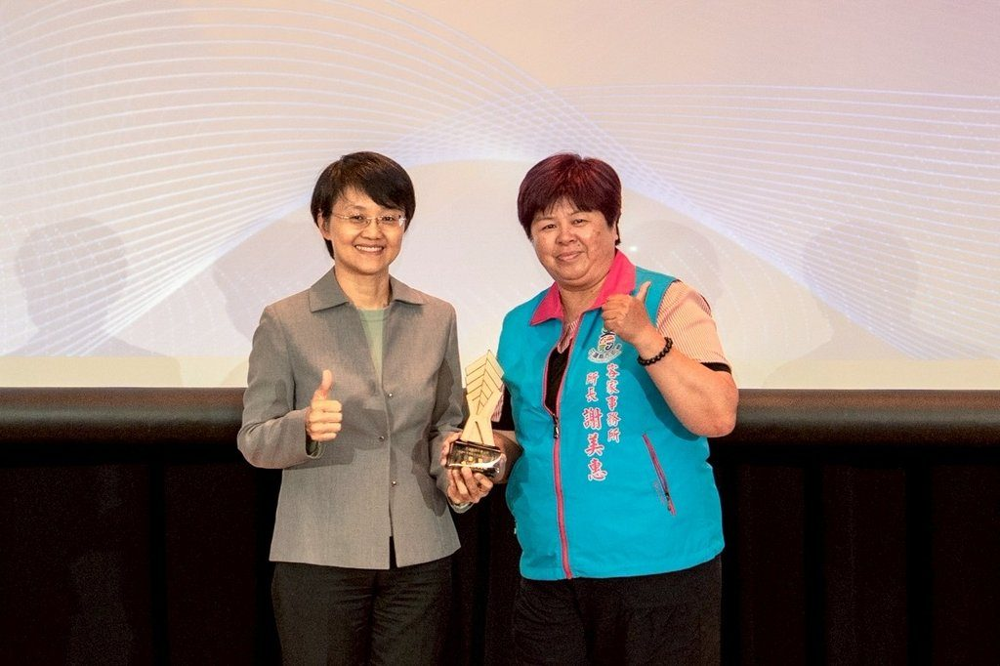
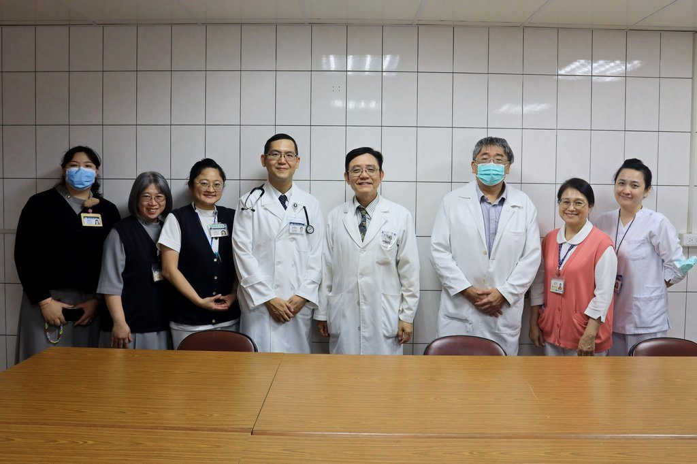
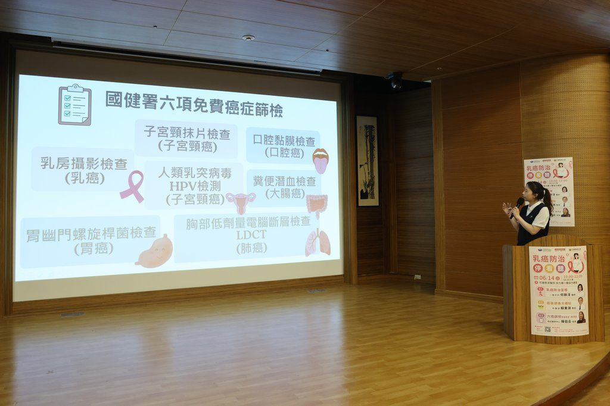
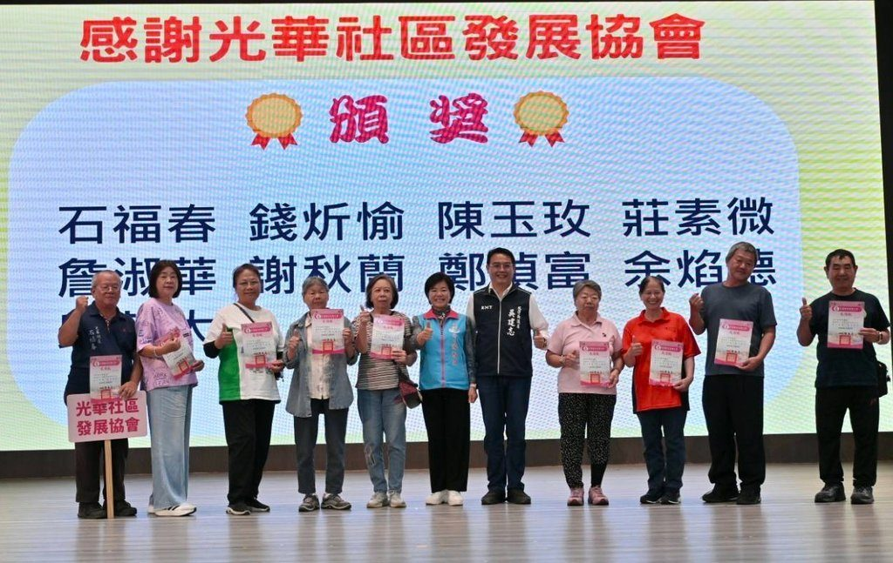

「阿勒飛斯」樂舞巡展吉安 游淑貞促世代交流與跨鄉鎮資源共享
可樂電子報小編/編輯 吉安鄉公所與花蓮縣政府攜手推動原住民族文化藝術下鄉，日前於阿美族 […]…
閱讀全文 →可樂電子報小編/編輯 吉安鄉公所與花蓮縣政府攜手推動原住民族文化藝術下鄉，日前於阿美族 […]…
閱讀全文 →可樂電子報小編/編輯 吉安鄉公所迎接溫馨父親節，除了規劃將於8月舉辦「115年度模範父 […]…
閱讀全文 →
可樂電子報小編/編輯 115年6月21日10時許，新城警分局張姓員警休假期間，於花蓮縣 […]…
閱讀全文 →可樂電子報小編/編輯 吉安鄉南昌路一棟兩層樓民宅於20日下午發生火警，吉安鄉公所接獲通 […]…
閱讀全文 →
可樂電子報小編/編輯 吉安鄉公所日前舉行光華社區活動中心環境改善工程施工前說明會，吉安 […]…
閱讀全文 →
可樂電子報小編/編輯 吉安鄉公所為體恤基層同仁長期堅守崗位的辛勞，宣布跟進花蓮縣政府調 […]…
閱讀全文 →可樂電子報小編/編輯 吉安鄉巡守隊每逢端午佳節等重要節慶，都會協助公所將彙整後的生活物 […]…
閱讀全文 →可樂電子報小編/編輯 端午節不只是吃粽子的節日，也象徵夏季正式展開。隨著天氣轉熱，民 […]…
閱讀全文 →
可樂電子報小編/編輯 為延續賴清德總統對全民健康的承諾與落實「健康台灣」的願景，健保 […]…
閱讀全文 →可樂電子報小編/編輯 花蓮縣警察局新城分局和平所警員張英展執行勤區查察勤務時，發現一名 […]…
閱讀全文 →
可樂電子報小編/編輯 吉安鄉公所於16日下午於親民堂辦理『115年度巡守隊、義消、義 […]…
閱讀全文 →可樂電子報小編/編輯 為支持花蓮偏鄉教育與學生多元發展，國際獅子會300A-3區於13 […]…
閱讀全文 →
可樂電子報小編/編輯 吉安鄉在客家委員會「客語為通行語計畫」評比中脫穎而出，獲得114 […]…
閱讀全文 →
可樂電子報小編/編輯 79歲的蕭伯伯原患有慢性阻塞性肺病（COPD），今年5月初因感 […]…
閱讀全文 →東部地區老年人口比例居全台之冠，花蓮縣65歲以上人口達21.52%。為因應超高齡社會挑 […]…
閱讀全文 →可樂電子報小編/編輯 吉安鄉19個原住民部落的年度捕魚祭（Milaedis）已於14日 […]…
閱讀全文 →乳癌為臺灣女性發生率第1位的癌症，為達成「健康台灣」2030年降低癌症死亡率願景，花蓮 […]…
閱讀全文 →
可樂電子報小編/編輯 花蓮慈濟醫學中心舉辦「慈醫365．健康又幸福」系列講座，分享「六 […]…
閱讀全文 →可樂電子報小編/編輯 端午佳節將至，為傳承在地文化底蘊並增進家庭情感，吉安鄉公所與吉安 […]…
閱讀全文 →
可樂電子報小編/編輯 吉安鄉公所為了提升社區關懷照護能量，於吉安國小活動中心舉辦了「有 […]…
閱讀全文 →